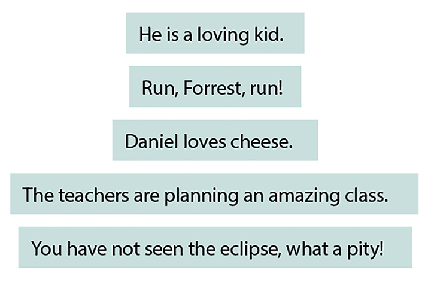
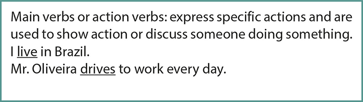
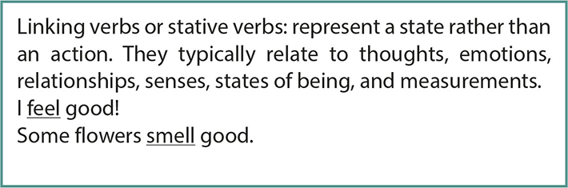
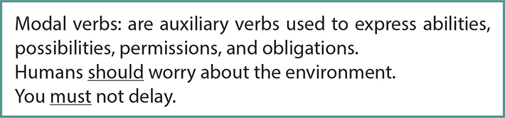
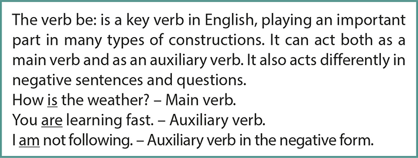
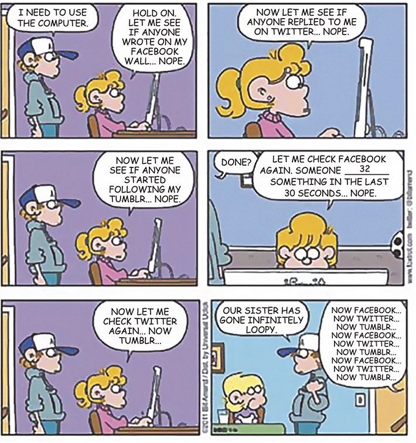

Friends sharing a moment together.
FG Trade/iStockphoto.com
Do you prefer one hundred
reais
in your wallet or a hundred friends in life? In Spain, according to an old saying, “With the money ending,
the friendship ends”, while, in Russia, there is another adage: “Instead of having one hundred rubles, it
is better to have one hundred friends.”
Americans use the word “friend” in a very general way, both for casual acquaintances
and close friends, and friendship is subject to changes in intensity as people move, change jobs, marry or
discover new interests. Yet, in China, the word “pengyou” (friend) is used only to refer to a person who
is known and trusted by the speaker for several years. Still, in all countries, sharing experiences is
usually the basis for making a friend.
Friendships are meaningful anywhere, and, for teens, especially, it’s important to
feel a sense of belonging and acceptance by their peers. Having a network of friends, supporting family
and caring teachers may help students avoid negative relationships, such as the abusive behavior of
bullies. Learning positive friendship skills can be socially helpful and make teenagers feel happier and
more confident.

Dive in

Verbs: what they are, how to use them
A verb is a word that expresses an action or a state of being. It can be considered as one of the most
important parts of a sentence, and it is for sure the most important part of the predicate, as you have
learned in Portuguese. There are also the
helping
or
auxiliary verbs
, that help the action or linking verbs (an auxiliary verb + a verb is called a
verb phrase
).
Look at the following sentences and underline the verbs in them.

One easy way to help you recognize a verb is looking at its location compared to the subject. Verbs
usually come after a noun or pronoun. These nouns and pronouns are referred to as the subject of the
sentence.
Check the example:

The verb “thought” comes after the noun “Jack”, so the action Jack (subject) was performing was “thinking”
(verb).
There are more than ten different types of verbs that are grouped together by function. Take a look at
five of the most common ones.




Grammaring
Based on what you have learned about verbs, answer the following questions.
1
Read the excerpt and underline the verbs.
Everyone can use a friend or two. Having a few friends is great, but having a best friend is even
better. From wacky adventures to great memories, a best friend can always find a way to magically put a
smile on your face. Best friends are the people we deeply trust, the ones who we laugh with, cry to, and
tell our deepest and darkest secrets to.
KRICKET, Kate. “Best friend quotes”.Luvze , 24 set. 2016. Available at
<www.luvze.com/best-friend-quotes>. Accessed on June 23rd, 2021.
2
Read the sentences and indicate the function of each verb in bold.
a)
It hasn’t rained all this month.
b)
What does Maria like to drink?
c)
You are my sunshine.
d)
Does Peter believe in miracles?
e)
If you want to pass the exams, you must study harder.
3
Where can verbs go in a sentence? Use the verbs in the chart to fill in the blanks correctly. Attention:
some words can be repeated.
bound – spare – resting – was – said – free – parted – repay – lay – stalking –
roused – let – filled – get – think – came – caught – go – will – running – help – struggling – laid –
gnawed – begged – unable – kill – knew – laughed – ran – could – repay – found – would – can
A Lion _________ asleep in the forest, his great head _________ on his paws. A timid little Mouse
_________ upon him unexpectedly, and in her fright and haste to _________ away, _________ across the
Lion’s nose. _________ from his nap, the Lion _________ his huge paw angrily on the tiny creature to
_________ her.
_________ “ me!” _________ the poor Mouse. “Please _________ me _________ and some day I _________
surely _________ you.”
The Lion _________ much amused to _________ that a Mouse _________ ever _________ him. But he _________
generous and finally _________ the Mouse _________ .
Some days later, while _________ his prey in the forest, the Lion _________ in the toils of a hunter’s
net. _________ to _________ himself, he _________ the forest with his angry roaring. The Mouse _________
the voice and quickly _________ the Lion _________ in the net.
_________ to one of the great ropes that _________ him, she _________ it until it _________ and soon the
Lion _________ free.
“You _________ when I _________ I _________ you,” _________ the Mouse. “Now you _________ that even a
Mouse _________ _________ a Lion.”
AESOP. “The Lion & the Mouse”. The Aesop for Children. Chicago: Rand, McNally & Co., c.
1919.
4
Find in the next text one example of each type of verb and write them down.
-
Main verbs or action verbs:
- Linking verbs or stative verbs:
- Auxiliary verbs or helping verbs:
- Modal verbs:
- The verb to be:
Now, let’s read the text.
[...]
Adult friendships can be tricky. They’re not as fragile as the friendships of the teenage years, when
something as simple as your pal going to Starbucks with someone else can shake your relationship to its
foundations; but neither is it like primary school, where you can just go up to someone in the
playground and decide you are now best friends for ever. [...]
[...] I’ve had the same group of friends for more than half my life – one from the first year of
secondary school, when we bonded over whatever it is 11-year-olds bond over, and two I met a couple of
years later, during an intense emo phase. We have all evolved from being teenagers who listened to My
Chemical Romance on our Sony Ericssons in the park to adults with jobs and, for one of us, a baby. It’s
lucky that we still like each other, but that doesn’t mean there was no work involved. Here are some of
the things I’ve learned about making those connections last. [...]
[...] Nostalgia is overrated
Remember that weird haircut you got? Or that time you peed yourself when you were kind of
too old to be peeing yourself? Or when you went through a phase where you lied and told everyone your
name was Scarlet because you wanted to seem more interesting? If you start every conversation with,
“Hey, remember that time when...?” you and your friend will die of boredom. [...]
[...] ... but it’s good to have “your thing”
People get busy and life has dramatic ups and downs, but if you watch Drag Race every
Friday together or bake Betty Crocker cookies every month, before eating most of the dough because,
honestly, it’s better than the final product, you have something to anchor you through the chaos of
life.
[...] The only way to fight is like siblings
As teenagers, a friend and I got into a really vicious fight: long story short, I hit her
on the arm with a loaf of bread and it ended with her storming out of the front door.
Ultimately, she returned with a pint of milk, we made some tea and the fight was over.
Because unless something truly terrible happens, there’s no room for grudges. You will annoy each other,
of course, but it’s always better to get over it quickly. You also love each other and probably aren’t
going to end a friendship because one of you said a dress in Topshop was something the ghost of a
Victorian child would wear, not realizing
the other one had the same dress at home.
Real friends don’t cancel plans
We’ve reached peak “I love cancelled plans!” culture. Every fast-fashion line carries at
least one “Tacos. Netflix. Cancelled Plans. YASSS” T-shirt. And yes, it can feel great to cancel on
things you were dreading, and for some it is an important part of maintaining good mental health. But
with the exception of that, making a cutesy introversion meme your mantra is no way to live your life.
Commitment is key to maintaining real relationships. I’m sure that my friends didn’t
actively enjoy the times they came over to see me knowing I was just going to cry because I was too sad
to talk, but they turned up, because they know I would do the same for them. [...]
NAHAR, Jasmin. The Guardian, 27 abr. 2019. © Copyright Guardian News & Media
Ltd, 2019.
Choose the alternative that contains the best possible title for the article.
5
Choose the alternative that contains the best possible title for the article.
- How to be best friends forever: don’t cancel, fight like siblings and make new memories.
- The secret to make friends during early years at school: have many cute moments.
-
How to create a large circle of friends when you reach adulthood: show some respect.
-
Choose your friends carefully.
6
Write T (true) or F (false) for the sentences, according to the information from
the text. Correct the false sentences.
-
( ) Having friends as an adult is as simple as making friends as a child.
-
( ) Jasmin Nahar believes maintaining friends from when you were younger is easy, but it
also requires a lot of luck.
-
( ) Being very nostalgic is not good for long lasting friendship.
-
( ) If you want to have a long term friendship you must let go the stupid fights and make
peace soon.
-
( ) Real friends cancel plans when they discover you are sad and in no mood for
happiness.
7
The following words are underlined in the text. Match them to their correct
definitions
(taken from: https://en.oxforddictionaries.com).
- overrated
- boredom
- anchor
- siblings
- annoy
- commitment
-
( ) verb – Provide with a firm basis or foundation.
-
( ) noun – The state or quality of being dedicated to a cause, activity etc.
-
( ) adjective – Have a higher opinion of (someone or something) than is deserved.
-
( ) verb – Make (someone) a little angry; irritate.
-
( ) noun – The state of being weary and restless through lack of interest.
-
( ) noun – Each of two or more children or offspring
 Speak out
Speak out
Can friendship prevent diseases?
Not only older people benefit form friendship, people of all ages do. With good friends, we can drop
our masks and be imperfect, without judgement. This lowers stress level, improves the immune system,
the attentional focus, as well as the physical and mental performance.
In pairs, try to find an explanation for why people with fewer or no friends tend to become sick
easier.
EsPCEx-SP 2017 Leia o texto e responda às questões 1, 2 e 3.
Military operations in megacities
The challenge of conducting future military operations within megacities (cities with
populations over ten million) lies in understanding the dynamic and multidimensional complexities of
these urban areas. Military operations in megacities, whether combat-oriented or otherwise, will be
similar to those
in other urban environments, but will be complicated by factors unique to the megacity environment.
First and foremost, megacities are largely multilingual. While this can be said of large
cities in general, the scale of multilingualism in megacities magnifies its effects. For instance, in
New York City (NYC) – a metropolitan megacity of over eighteen million people – nine foreign languages
are spoken by communities of one hundred thousand or larger. Language also plays a role in determining
one’s identity and the language community in which one decides to live. For example, the majority of
Russian speakers in NYC tend to live in south Brooklyn and Staten Island, while Chinese speakers tend to
cluster in Manhattan and Sunset Park. In megacities, language, culture, and regional context go hand in
hand and often reach beyond ethnic identities.
In order to fully understand the context of a megacity, we must understand the role of
the languages used in its communities. How ___________(1) language communities interact in megacities?
What tensions ___________(2) caused by multiple language communities in urban space? What role
___________(3) language play in the power structures (government or otherwise) of megacities?
Adapted from
Military Review
– Jan/Feb 2016.
1
Choose the statement in which the word lies is used with the same meaning as in
paragraph 1.
- He lies in the sun for too long.
- His skill lies in his ability to communicate.
- I can tell from her face that she lies.
- A giant crocodile lies in wait for its prey.
- This item always lies over for a next meeting.
2
Choose the alternative containing the correct words to respectively complete
gaps (1), (2) and (3) in paragraph 3.
- is, does, do
- do, are, do
- are, is, do
- are, do, does
- do, are, does
3
According to the text, choose the correct statement.
- Urban environments are more complex than megacities.
- Nine languages are spoken in large cities.
- Language is of great concern to the military.
- Ethnic identities are limited by regional context.
- Military operations are just combat-oriented.
Unifesp 2018 Texto para as questões de 4 a 6.

(http://etxerox.blogspot.com.br)
4
Os quadrinhos têm como tema principal
- o uso excessivo de mídias sociais pelos adolescentes.
- a falta de controle dos filhos pelos pais.
- o compartilhamento de brinquedos e equipamentos domésticos pelas crianças.
- a denúncia do relacionamento conflituoso entre irmãos adolescentes.
- a diferença de necessidade de comunicação de meninas e meninos.
5
A lacuna numerada no quarto quadrinho deve ser preenchida por
- is writing.
- have written.
- used to write.
- might write.
- could have written.
6
The word “loopy” can be replaced, with no meaning change, by
- affectionate.
- obsessed.
- upbeat.
- selfish.
- spoilt.
UPF-RS 2015
Read the text and answer the questions 7 to 9.
Bag your Bags, Bring ’em Back
The best way to recycle your plastic bags and film is to bring them back to a store that
collects them for recycling. Just stuff them clean and dry into a single plastic bag, tie it up, and
drop it into a plastic bag collection container found at the retail partners. Note: The stores listed
below have partnered with King County to promote the Bag Your Bag campaign. There may be other stores
not listed that accept plastic bags for recycling.
Plastic bags and film collected at grocery stores stay cleaner and are easier for recycling facilities
to process than bags placed in your home recycling collection bin. The bags are turned into new products
like decking, benches, playground structures, and new plastic bags. And remember to bring along your
reusable bags when you shop.
The Bag your Bags, Bring ’em Back campaign is a partnership between the King County Solid Waste Division
and local grocery stores to show the best way to recycle plastic bags.
(Retrieved and adapted from
http://your.kingcounty.gov/solidwaste/garbage-recycling/bag-your-bags.asp. Access on September 28th,
2014).
7
Considering the fragment “Plastic bags and film collected at grocery stores stay
cleaner and are easier for recycling facilities to process than bags placed in your home recycling
collection bin” (
lines 10 to 13
), the alternative in which there is no change in meaning is:
- Bags placed in your home recycling collection bin stay dirtier and are more difficult for recycling
facilities to process than plastic bags and film collected at grocery stores.
- Bags placed in your home recycling collection bin stay as clean and are easy for recycling
facilities to process as plastic bags and film collected at grocery stores.
- Bags placed in your home recycling collection bin stay cleaner and are easier for recycling
facilities to process than plastic bags and film collected at grocery stores.
- Bags placed in your home recycling collection bin are the cleanest and the easiest ones for
recycling facilities to process.
- Bags placed in your home recycling collection bin do not stay dirtier and are not more difficult for
recycling facilities to process than plastic bags and film collected at grocery stores.
8
Traditionally, at a grocery store, you can buy
- shoes.
- clothes.
- food.
- medicines.
- electronics.
9
In the title of the campaign, “
Bag
your
Bags
, Bring ’em Back”, the words in bold are respectively classified as:
- verb and noun.
- verb and adjective.
- noun and verb.
- noun and adjective.
- adjective and verb.
10
Eear-SP 2019
Read the text and complete the blanks with the appropriate verbs.
Dear John,
How are you? Here I am in Mayflower in an English class with my cousin. Here in Mayflower
the students __________ to school in the morning, but in Brazil __________ the option to study during
the morning or after lunch. I think this option ________ because of the weather: in Brazil the sun is up
early so people start the day earlier. I miss you and i hope to see you soon.
Love, Lucy.
- goes / there are / happened
- go / there is / happens
- goes / have / happens
- go / got / happen